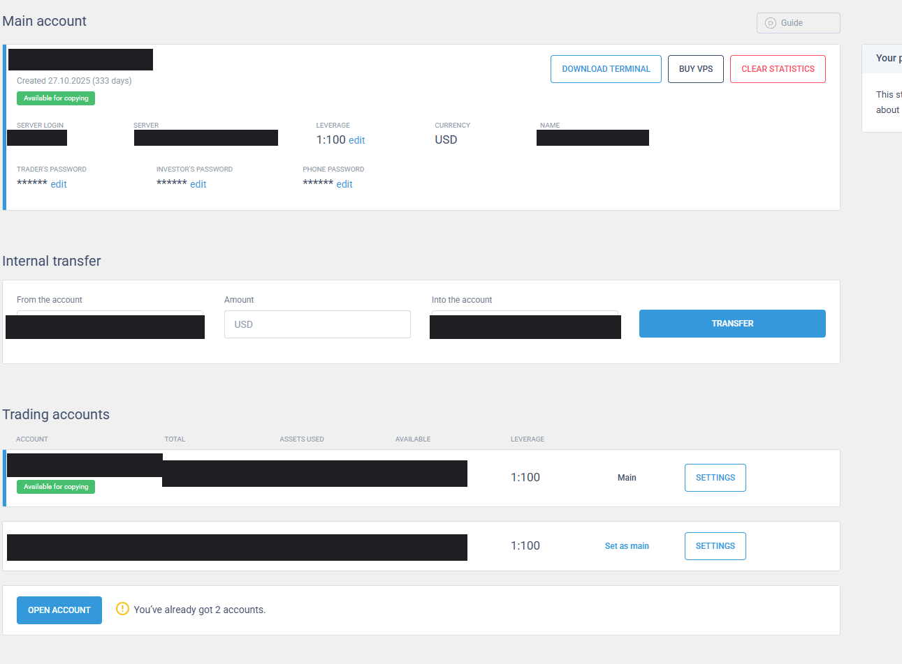
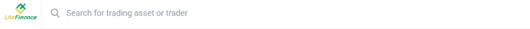
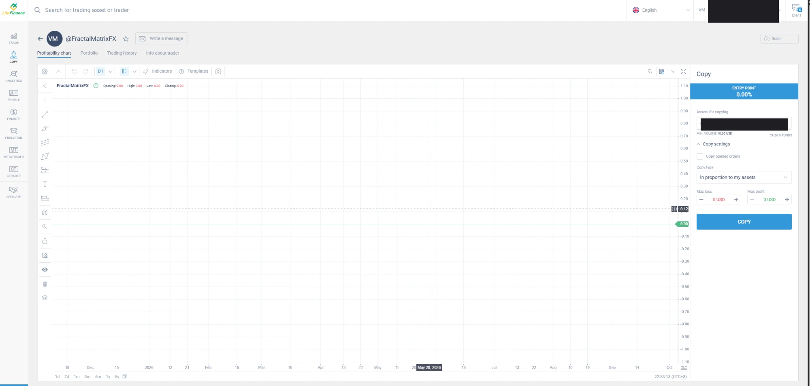
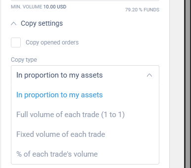
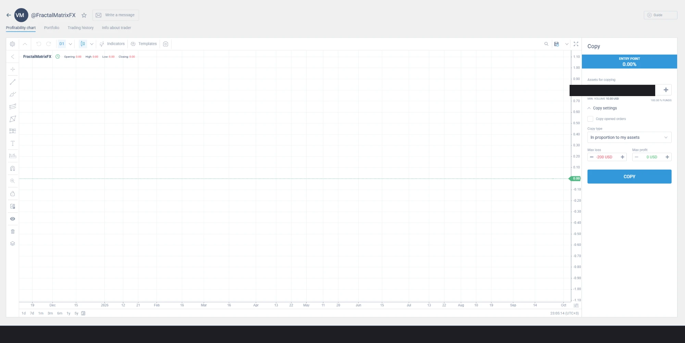

این راهنما نشان میدهد چطور حساب معاملاتی خودتان در لایتفایننس را — کاملاً از طریق پنل خودِ بروکر، بدون نصب هیچ نرمافزاری و بدون اشتراکگذاری رمز عبور با کسی — به سیستم کپیتریدینگ متصل کنید.
وارد my.litefinance.org شوید → از نوار کناری MT (METATRADER) را بزنید. اگر موجودی حساب شما کم است، کنار LEVERAGE روی edit کلیک کنید و به ۱:۱۰۰۰ تغییر دهید.

همان صفحه برای گام ۲ هم استفاده میشود.
اگر بیش از یک حساب معاملاتی دارید، در همان صفحه، کنار حسابی که میخواهید با آن کپی کنید، روی Set as main کلیک کنید. این تعیین میکند کدام حساب واقعاً درگیر کپیتریدینگ شود.
از نوار جستجوی بالای صفحه، عبارت FractalMatrixFX را تایپ کنید و پروفایل را باز کنید.

در پروفایل، پنل Copy سمت راست باز میشود. مبلغ تخصیصی خودتان را وارد کنید و Copy settings را باز کنید.

روی این فیلد کلیک کنید و از بین گزینهها «In proportion to my assets» را انتخاب کنید — تنها گزینهای که حجم معاملات را متناسب با اکوییتی خودتان تنظیم میکند.

یک سقف ضرر منطقی (مثلاً ۲۰ تا ۳۰٪ از مبلغ تخصیصی) در Max loss وارد کنید، مطمئن شوید درصد FUNDS برابر ۱۰۰٪ است (یعنی درست روی حساب خودتان تنظیم شده)، سپس COPY را بزنید.

| فیلد | مقدار پیشنهادی |
|---|---|
| Copy opened orders | خالی (غیرفعال) |
| Copy type | In proportion to my assets |
| Max loss | ۲۰–۳۰٪ از مبلغ تخصیصی |
| Max profit | بدون سقف (اختیاری) |
| Leverage (زیر ۱۰۰$) | 1:1000 |
اگر در هر مرحله مطمئن نبودید، از دکمهٔ CHAT در پنل خودِ لایتفایننس با پشتیبانی صحبت کنید — آنها به حساب شما دسترسی مستقیم دارند و میتوانند دقیقترین راهنمایی را بدهند.
تصاویر این صفحه از پنل واقعی گرفته شدهاند؛ نام، شماره حساب، ایمیل، شماره تماس و مبالغ مالی از همهٔ آنها حذف شده است.